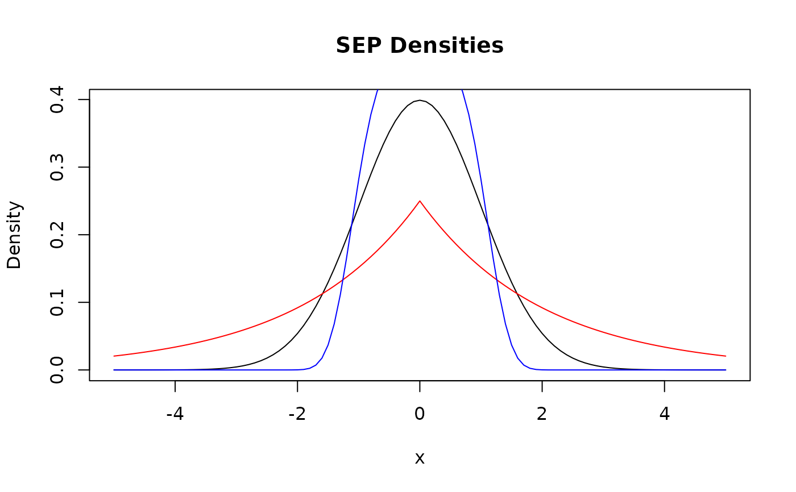
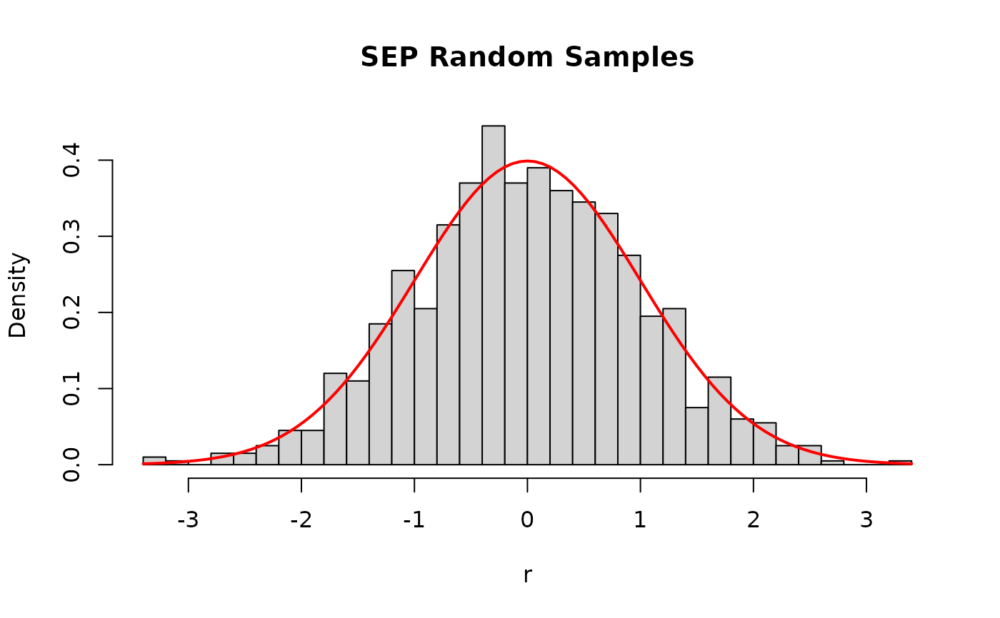

Density, distribution function, quantile function, and random generation for the Subbotin Exponential Power (SEP) distribution, also known as the Generalized Normal or Generalized Error Distribution.
Usage
dsep(x, mu = 0, sigma = 1, nu = 2, log = FALSE)
psep(q, mu = 0, sigma = 1, nu = 2, lower.tail = TRUE, log.p = FALSE)
qsep(p, mu = 0, sigma = 1, nu = 2, lower.tail = TRUE, log.p = FALSE)
rsep(n, mu = 0, sigma = 1, nu = 2)Arguments
- x, q
Numeric vector of quantiles.
- mu
Numeric. Location parameter (default = 0).
- sigma
Numeric. Scale parameter, must be positive (default = 1).
- nu
Numeric. Shape parameter, must be positive (default = 2). \(\nu = 2\) gives the normal distribution; \(\nu = 1\) gives the Laplace (double exponential) distribution.
- log, log.p
Logical. If TRUE, probabilities/densities are given as log. Default is FALSE.
- lower.tail
Logical. If TRUE (default), probabilities are \(P[X \le x]\), otherwise \(P[X > x]\).
- p
Numeric vector of probabilities.
- n
Integer. Number of observations to generate.
Value
dsep gives the density, psep gives the distribution
function, qsep gives the quantile function, and
rsep generates random deviates.
Details
The SEP distribution with parameters \(\mu\), \(\sigma\), and \(\nu\) has density:
$$f(x|\mu,\sigma,\nu) = \frac{\nu}{2^{1+1/\nu}\, \Gamma(1/\nu)\,\sigma} \exp\left(-\frac{1}{2}\left|\frac{x-\mu}{\sigma}\right|^\nu\right)$$
where \(-\infty < x < \infty\), \(-\infty < \mu < \infty\), \(\sigma > 0\), \(\nu > 0\).
The SEP is symmetric around \(\mu\). Special cases:
\(\nu = 2\): Normal distribution \(\mathcal{N}(\mu, \sigma^2)\)
\(\nu = 1\): Laplace (double exponential) distribution
\(\nu \to \infty\): Uniform distribution (limit)
References
Subbotin, M. T. (1923). On the law of frequency of error. Matematicheskii Sbornik, 31(2), 296–301.
See also
[FOSSEP()] for the skewed version, [LEP()] for an alternative symmetric exponential power parameterization.
Examples
dsep(0, mu = 0, sigma = 1, nu = 2)
#> [1] 0.3989423
x <- seq(-5, 5, by = 0.1)
plot(x, dsep(x, nu = 2), type = "l",
ylab = "Density", main = "SEP Densities")
lines(x, dsep(x, nu = 1), col = "red")
lines(x, dsep(x, nu = 4), col = "blue")

psep(c(-2, 0, 2), mu = 0, sigma = 1, nu = 3)
#> [1] 0.001190058 0.500000000 0.998809942
qsep(c(0.025, 0.5, 0.975), mu = 0, sigma = 1, nu = 3)
#> [1] -1.433635e+00 2.498188e-16 1.433635e+00
set.seed(123)
r <- rsep(1000, mu = 0, sigma = 1, nu = 2)
hist(r, breaks = 30, freq = FALSE, main = "SEP Random Samples")
curve(dsep(x, nu = 2), add = TRUE, col = "red", lwd = 2)
